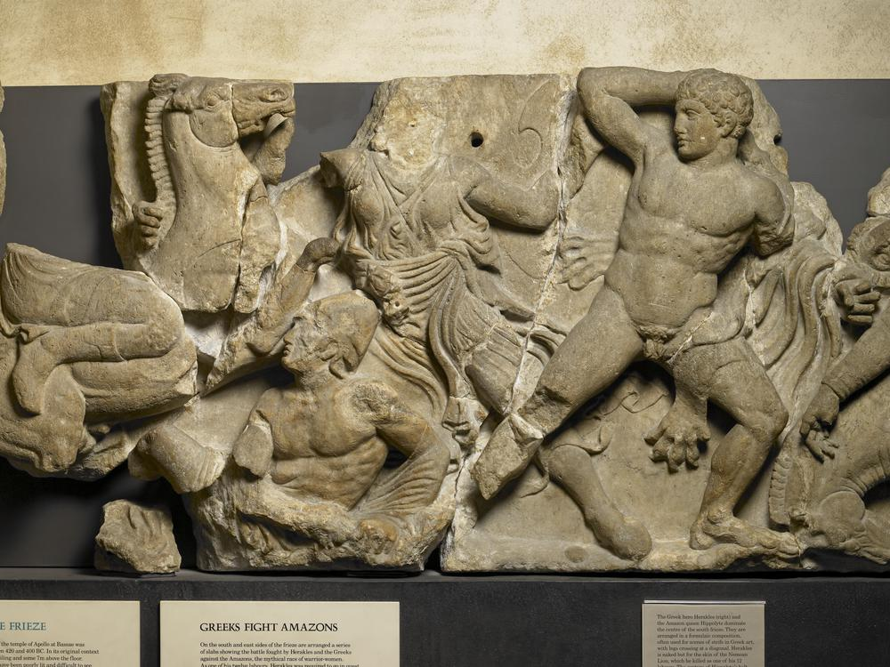
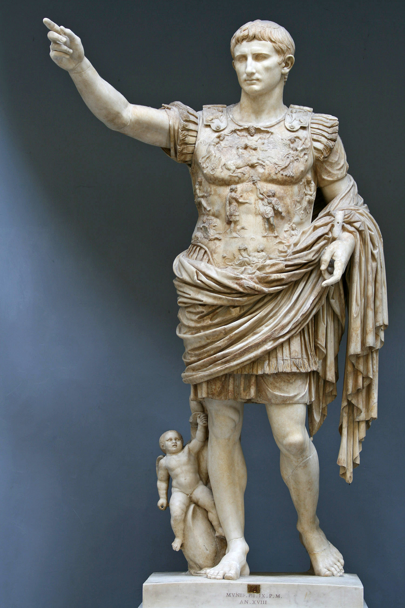
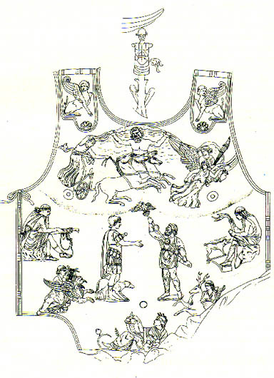
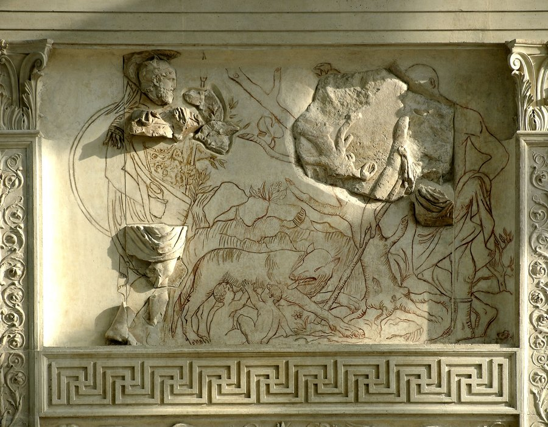
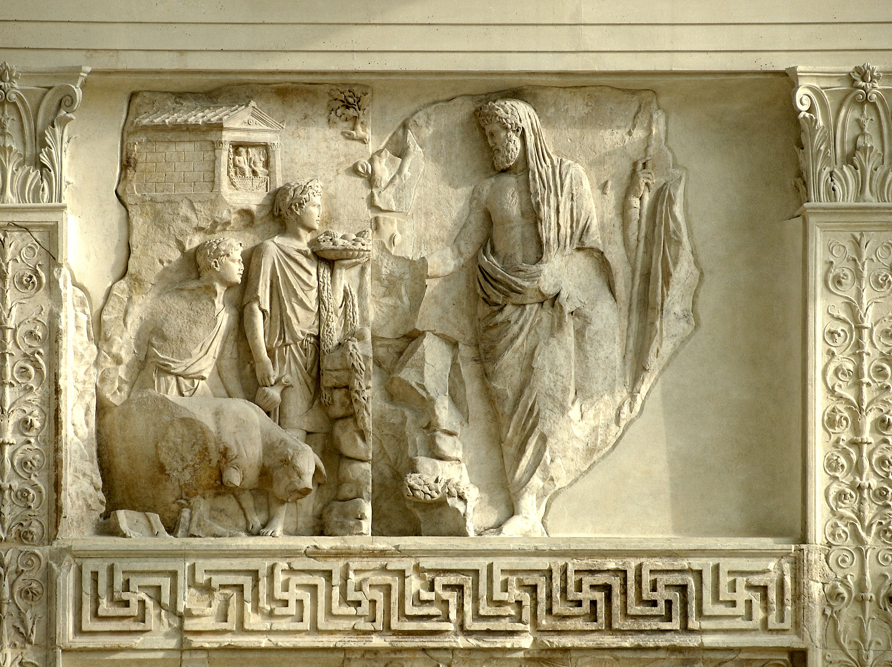
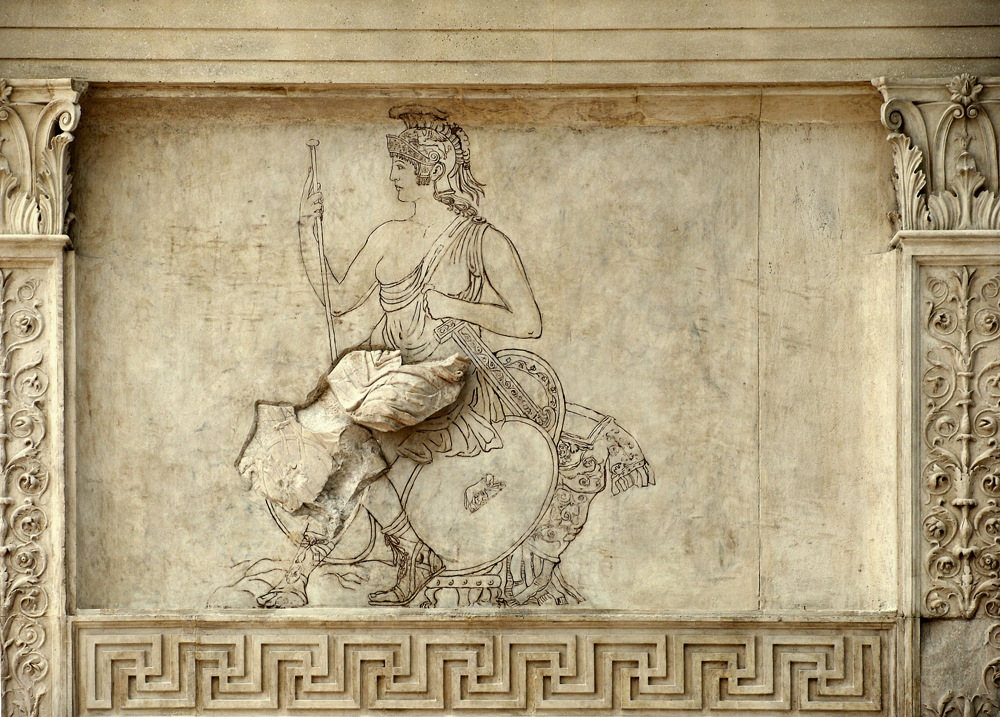
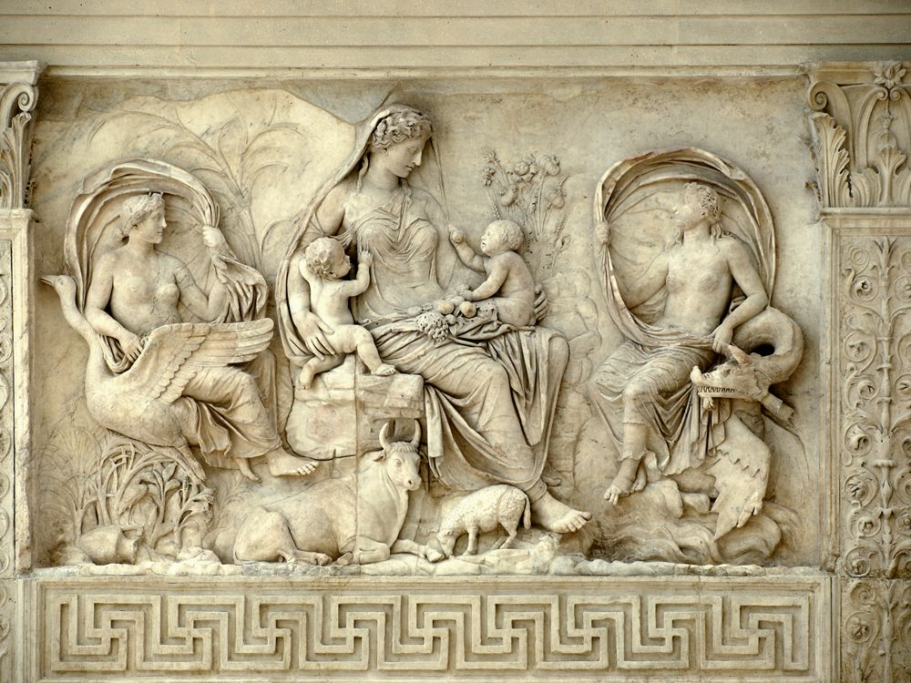
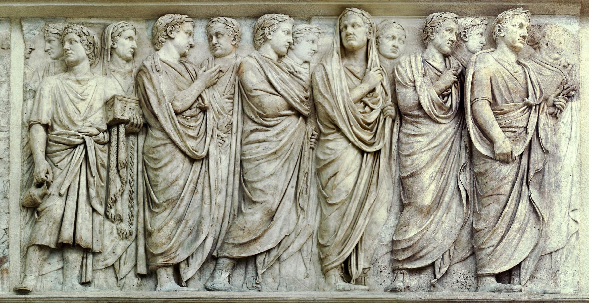
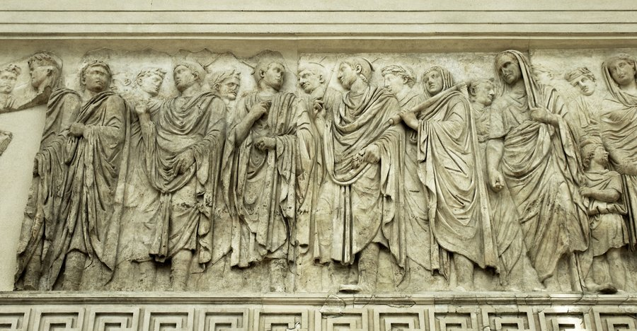

Greece and Rome — the Centauromachy and Amazonomachy on Greek temples, and how Augustus used myth and sculpture to express imperial power
Greece
The Centauromachy — myth and meaning
Who were the Lapiths and Centaurs?
the Lapiths were a tribe of men from Thessaly in northern Greece, ruled by Ixion
the Centaurs were the children of Ixion himself — born when Zeus tricked him by making an image of Hera out of clouds; Ixion coupled with the cloud and the next rains produced the Centaurs
so the Centaurs and Lapiths shared a father — the Centaurs were not just enemies but degenerate kin, the same line gone wrong
the Centaurs were savage creatures — lived in caves, hunted wild food, fought with rocks, were unskilled in the arts of men: crafts, hospitality, religion
what it tells us: the myth sets up two peoples from the same origin who became opposites — one civilised, one barbaric — the symbolic ground for everything the Greeks later read into it
The battle
at the wedding of the Lapith king Pirithous to Hippodemia, the Centaurs were invited as guests — effectively a test of whether they could behave like civilised men
“flown with insolence and wine” the Centaurs drank wine unmixed with water — Greeks always diluted their wine; failure number one
they then attacked the women — failing the test of how to behave at a sacred ceremony; the wedding was disrupted, the sacred guest-host bond broken
Theseus, friend of Pirithous, fought alongside the Lapiths — pulling Athens's own founding hero into the story
the Lapiths killed some Centaurs on the spot, defeated the rest in war, and expelled them from the country
what it tells us: each Centaur failure (wine, women, ritual) marks a category of civilised behaviour they could not master — the myth is built as a sequence of failed tests, which is exactly why the Greeks could later map it onto any ‘barbaric’ enemy
What the myth came to mean
after Greece defeated Persia at Plataea in 479 BC, the Persians became the image of barbarism
the Centauromachy came to symbolise the victory of civilisation over barbarism — Greek values triumphing over savage foreign invaders
the Greeks displayed it on their temples as a permanent visual statement of this victory
The Centauromachy worked as a symbol because every element of the story mattered. The Centaurs were invited as kin (they shared a father with the Lapiths) but behaved like enemies. They could not handle wine, could not respect women, could not honour a sacred ceremony. The Lapiths defeated them not just through strength but through holding the line of civilised conduct. For a Greek audience after the Persian Wars, the parallel was obvious — Persia, like the Centaurs, had been a barbaric power that violated everything civilisation stood for, and Greece had defeated it.
Exam focus
Who were the Centaurs, and how were they born?
What happened at the wedding of Pirithous?
What did the Centauromachy come to represent to the Greeks?
Why did the Centauromachy become a popular subject in Greek temple architecture?
Greece
The Centauromachy on the Parthenon — prescribed source
of the ninety-two metopes that ran around the Parthenon, thirty-four depicted the Centauromachy — making it the single most-repeated subject on the entire building
a team of sculptors worked on them — the variation in quality lets us compare different hands working the same brief
the metopes are the best preserved Parthenon sculptures but are still heavily fragmented
positioned around ten metres up — viewed from beneath, the upward angle made the centaurs loom and the falling Lapiths appear to tumble outwards, heightening the drama for the worshipper on the temple steps
what it tells us: thirty-four metopes of the same myth is not decoration; it is a sustained, repeated argument carved into the most important building in Athens
Why the Centauromachy mattered to Athens
the Persians sacked Athens in 480 BC and destroyed the earlier temple to Athena on the Acropolis — a wound still fresh when Pericles began rebuilding
putting the Centauromachy on the new Parthenon was a message: Athens would never give up, and the Persians (like the Centaurs) had been defeated by Greek civilisation
Theseus's involvement in the myth made it especially Athenian — the city's own founding hero had fought in the very battle the metopes depicted
what it tells us: the Centauromachy was not chosen at random — it gave Athens a way to commemorate the Persian Wars without ever depicting a Persian
Analysing a metope — the sculptor's three objectives
create a recognisable scene — so viewers ten metres below can read the story at a glance without effort
create realism — so the scene feels true, not stylised; realism is what makes the viewer believe the violence and feel the stakes
fill the space — so the square reads as a whole composition; blank areas would let the eye drift and break the message
these three objectives are not separate skills — they are three ways the metope does its political work on the viewer
How a typical metope succeeds — recognisable scene
the centaur dominates the metope — the viewer sees the barbarian first, the civilised man second (and falling)
the centaur stands triumphant over the fallen Lapith — but the wider programme tells us this is a temporary triumph; the Lapiths (and the Athenians) will win the war
viewed from beneath, the centaur rears above the Lapith, who appears to roll off the metope — the drama is calibrated for the worshipper looking up from the steps
what it tells us: the scene is engineered for the viewer below — instantly recognisable as a Centauromachy, dramatic enough to hold attention long enough to do its work
How a typical metope succeeds — realism
the centaur's left arm is in low relief, the body in high relief — the sculptor varied depth so the figure stayed legible from ten metres below
a semi-circular mark above the right shoulder suggests the centaur held a pot — even a small detail (the wine vessel) reinforces the original transgression that started the battle
the centaur's front legs raised and the rear leg muscles and raised tail capture mid-trample — anatomical realism makes the violence convincing
the Lapith's awkwardly twisted body shows the moment of defeat — landing on his arms with legs raised, real enough to make the viewer wince
what it tells us: realism is not just craft — it is what makes the viewer believe the violence and sympathise with the Lapith (the proxy for Athens)
How a typical metope succeeds — filling the space
the rearing centaur with open arms fills the upper space, forming a ‘z’ shape with the Lapith — turning the static square into dynamic composition
the wild animal skin draped over the centaur's arm fills the right-hand side and reinforces his beastlike nature — every space-filling element does symbolic work
the twisted body and bent knee of the Lapith fills the bottom of the metope — even the composition makes the Lapith look broken
what it tells us: the metope has no wasted space, and no space that does not serve the message — this is sculpture as argument
use the Parthenon metopes in answers about how Greek temple sculpture expressed civic power
The Parthenon metopes did three things at once. They told the Centauromachy story; they demonstrated the technical skill of Athenian sculpture at its peak; and they made a political statement about Athens's recent history. The metopes were never just decoration — they were a permanent civic message carved in marble. Every Athenian and every visitor approaching the Parthenon was being told the same thing: civilisation defeats barbarism, and Athens is civilisation.
Exam focus
How many of the Parthenon metopes depicted the Centauromachy?
Why was the Centauromachy chosen for the Parthenon?
What were the sculptor's three objectives when designing a metope?
How successfully has a Parthenon sculptor depicted the Centauromachy? Refer to a specific metope.
Greece
The Amazonomachy — myth and meaning
Who were the Amazons?
a mythical race of women warriors from Asia Minor (modern western Turkey) — foreign in geography
they avoided men except when they needed to repopulate — coupling with men from a neighbouring tribe
baby boys were killed; baby girls were raised by their mothers as Amazons — an inversion of the normal Greek household
in myth they consistently sided against the Greeks — never neutral, always the enemy
what it tells us: every feature of the Amazons inverts a Greek norm — foreign, female-led, warlike, hostile — making them ideal symbolic enemies, like the Centaurs but with the gender threat added on top
The two Amazonomachies
first battle:Heracles vs the Amazon queen Hippolyta during his ninth labour — for her magical belt; the most famous pan-Greek hero defeating the Amazons
second battle (the Attic War): after Heracles gave an Amazonian bride to Theseus, the Amazons invaded Athens; Theseus and Heracles led an Athenian army against them
the Attic War put two foundational heroes — one pan-Greek (Heracles), one Athenian (Theseus) — on the same side, making the myth perfect for any Greek city wanting to claim a share in heroic identity
like the Centauromachy, the Amazonomachy came to represent Greek triumph over foreign peoples — particularly resonant after the Persian Wars
what it tells us: the Amazonomachy and Centauromachy were interchangeable as power symbols — both stage civilisation defeating disorder, which is why they so often appear together on the same temple
The Amazonomachy worked as a power symbol for the same reason the Centauromachy did — it staged a battle between Greek order and a foreign enemy that violated normal categories. The Amazons were foreign, female, and warlike, breaking the expected order of Greek civilisation. Greek victory over them, like Greek victory over the Centaurs and over the Persians, was a victory of the proper world over a disordered one. The fact that Heracles and Theseus fought together in the Attic War made it perfect material for cities wanting to claim a share in Greek heroic identity.
Exam focus
Who were the Amazons, and where did they come from?
Describe the two main Amazonomachies.
What did the Amazonomachy come to represent to the Greeks?
Why was the Amazonomachy a popular subject in Greek temple architecture?
Greece
The Amazonomachy at Bassae
The Temple of Apollo at Bassaebegan 450 BC · architect Iktinos · western Peloponnese
Bassae was a small town around 36 miles south-east of Olympia — geographically isolated, well off the main routes
and yet Pausanias rated the temple among the most beautiful in the Peloponnese — the gap between Bassae's size and its temple's quality is the puzzle
the architect was Iktinos — also a designer of the Parthenon, which explains how a remote town acquired such a building
dedicated to Apollo for his help during a plague
what it tells us: a small town hired the best architect in Greece to build its temple — Bassae was reaching for cultural status its size did not warrant, and the choice of mythological subjects was part of that reach
The unique internal friezeview image

Bassae internal frieze · Heracles fights the Amazons
the Amazonomachy was depicted on a continuous frieze running around the inside of the naos — a unique placement in the Greek world
this meant the viewer could take in the whole narrative standing in one place — closer to a panoramic mural than the wall-by-wall reading of Doric metopes at the Parthenon
battle scenes suited the busy continuous space — the unbroken format gave the sculptor room to stage the action across a whole wall instead of one square at a time
the frieze was twinned with the Centauromachy — both myths together, making a more complete civilisation-over-barbarism statement than either alone
on the east and south-east the frieze shows the Heraclean Amazonomachy — Heracles fighting for Hippolyta's belt; identifiable by his lion skin cloak
what it tells us: the bold placement and the twin-myth programme were both ways for a small town to claim a place in the same Greek tradition Athens used at the Parthenon
Analysing the Bassae frieze — recognisable scene
the sculptor created a clear battle: a man fighting two women — the viewer reads the conflict immediately, even on a busy continuous frieze where scenes risk blurring
the Amazons are depicted with one bare breast — their conventional iconographic marker, instantly identifying them across the Greek world
what it tells us: the figures are coded for instant recognition — essential when the eye has to scan a whole wall, not stop on a single metope
Analysing the Bassae frieze — realism
the drapery on the right-hand Amazon correctly depicts her movement towards the left — clothes catch wind and pace, sealing the illusion
the shallow relief on the horseback Amazon and Greek suggests a snapshot of mid-flight action — a frozen instant of pursuit
the horse is convincingly in action — though noticeably small in comparison to the human figures, a giveaway that this is not Parthenon-level execution
what it tells us: the realism mostly works — but the small horse is a reminder that Bassae had Iktinos as architect, not Pheidias as sculptor
Analysing the Bassae frieze — filling the space
the left and right characters mirror each other in pose; bent knees suggest action while fitting the rectangular field
the rearing horse in the centre fills the central area — a natural focal point that draws the eye to the middle of the wall
the horseback Amazon being pulled from her horse by the Greek is a clever solution — vertical action filling a horizontal frame
what it tells us: the sculptor exploited the panoramic format with composition tricks the rigid Parthenon metope format did not allow — the unique placement enabled a different visual language
Bassae shows what a small, geographically isolated town could achieve with the right architect and the right subject matter. By twinning the Amazonomachy with the Centauromachy, the temple claimed a place in the Greek tradition of representing civilisation defeating barbarism. The internal frieze placement was bold — visitors could read the whole story in one view, like a panoramic mural — and it gave Bassae a distinctive identity within the wider Greek architectural tradition. A small town was using myth to assert its Greekness.
Exam focus
Where is Bassae, and who designed its Temple of Apollo?
What was unusual about the placement of the Amazonomachy frieze at Bassae?
How is Heracles identifiable on the Bassae frieze?
How successfully has the sculptor depicted the Amazonomachy at Bassae?
Greece
Athens or Bassae — who used myth better?
The case for Athens
the Parthenon was on the Acropolis — visible to every citizen and every visitor to Athens; Bassae was a small isolated town
thirty-four metopes of the Centauromachy made it a sustained, monumental statement; Bassae's frieze, though continuous, was on a much smaller building
the Persian sack of Athens in 480 BC gave the Athenian use of the myth a direct, lived political meaning
Theseus's involvement in the myth made it specifically Athenian — Athens's own hero fighting in the battle
the Parthenon's marble and the quality of its sculpture represented the height of Greek artistic achievement
The case for Bassae
the internal frieze placement was unique in the Greek world — bolder and more innovative than the standard Doric metope arrangement at Athens
by twinning the Amazonomachy with the Centauromachy, Bassae used both myths together — a more comprehensive symbolic statement
the continuous frieze format allowed the whole narrative to be taken in at once — better for storytelling than separated metopes
Bassae was designed by Iktinos, the Parthenon architect — meaning it had the same architectural authority
for a small isolated town to commission a temple of this quality with these subjects was itself a statement: Bassae was claiming its place in Greek culture
Athens used myth on a grander scale and with more direct political meaning — the Centauromachy on the Parthenon was a permanent reply to the Persian sack of 480 BC, displayed at the heart of the Greek world. Bassae used myth more inventively — the internal frieze placement and the twinning of both myths together showed real architectural imagination, but the audience was small and the political stakes were lower. Athens used myth more powerfully; Bassae used it more creatively.
Exam focus
Who used the Centauromachy and Amazonomachy more powerfully — Athens or Bassae?
Give one similarity and one difference between the use of myth at the Parthenon and at Bassae.
Why might a small isolated town like Bassae have chosen these subjects for its temple?
Rome
Augustus — background and aims
Augustus — the rise to power
born 63 BC as Gaius Octavius; great-nephew of Julius Caesar
at 19, Caesar's will named him as heir; he took the name Gaius Julius Caesar Octavianus
formed the Second Triumvirate with Mark Antony and Lepidus; defeated Caesar's assassins Brutus and Cassius at Philippi (43 BC)
Lepidus exiled 36 BC; conflict with Antony culminated at the Battle of Actium (31 BC) — Antony and Cleopatra defeated and committed suicide
by 30 BC at age 33, Octavian was the last man standing after 60 years of civil war
in 27 BC the Senate gave him the religious name Augustus — “venerable, esteemed, respected”
he carefully avoided titles like king or dictator — Julius Caesar had been murdered for looking like a king; Augustus needed to hold power without naming it
what it tells us: Augustus's power could not be claimed openly — it had to be expressed through art, religion, and architecture, which is exactly why the Prima Porta and Ara Pacis matter
Augustus's four aims in sculpture and architecture
Recreate the Golden Age — Augustus saw fifth-century Greece (the Parthenon era) as a high point and wanted to evoke it in Roman art
Pax Romana — the Peace of Rome; the Battle of Actium had ended civil war and Augustus promoted himself as a bringer of peace
Pax Deorum — the Peace of the Gods; appease the gods and Rome would flourish
Self and family promotion — emphasising his family's links to the gods and promoting future heirs, while maintaining the appearance of a republic
Augustus understood that power in Rome could not be claimed openly — the murder of Julius Caesar had shown what happened to anyone who looked like a king. So his power had to be communicated through symbols, images, and architecture. His four aims worked together: linking himself to the Greek Golden Age gave him cultural authority; the Pax Romana gave him political legitimacy; the Pax Deorum gave him religious sanction; and family promotion built a dynasty. The Augustus of Prima Porta and the Ara Pacis are both attempts to do all four things at once in stone and marble.
Exam focus
How did Augustus come to power?
What is meant by Pax Romana and Pax Deorum?
What were Augustus's four aims in his sculpture and architecture?
Why did Augustus avoid taking titles like king or dictator?
Rome
The Augustus of Prima Porta — prescribed source
The Augustus of Prima Porta20 BC – AD 15 · marble · Vatican Museumview image

Augustus of Prima Porta · full statue
a marble copy made for Augustus's wife Livia — a private, family-funded image rather than a Senate commission
originally displayed at Prima Porta — a town nine miles north of Rome on the main northern road into the city; the first image of Augustus most travellers saw approaching the capital
based on the Doryphoros (“spear-bearer”) sculpted by Polykleitos around 440 BC — praised in antiquity as the depiction of the ideal man
not a direct copy — the sculptor Romanised it, fusing Greek artistic perfection with specifically Roman political messages
what it tells us: the statue's location and source both do work — it greeted travellers entering Rome, and it claimed the cultural authority of fifth-century Greece for the new Augustan order
How the statue differs from the Doryphoros
the right arm raised — the pose of a general or emperor addressing his army; Augustus is acting as a leader, not standing as an athlete
the clothing — military breastplate combined with senatorial toga held around the waist; soldier and statesman simultaneously, the two halves of Augustus's public identity in a single image
the standards on the breastplate carry the political message (see next entry) — the chest becomes a billboard for Augustus's biggest diplomatic win
the statue of Cupid at Augustus's feet links him to Venus (see below), embedding divine ancestry in the composition
what it tells us: each change from the Doryphoros is a separate political claim; the statue is not copying a Greek original, it is using one as a frame for a Roman argument
The breastplate — religious imageryview image

Prima Porta breastplate · the standards, Apollo, Artemis, Tellus
Apollo — Augustus's patron god, credited with the victory at Actium that ended the civil wars
Artemis — Apollo's sister, reinforcing the Apolline connection
Tellus — Mother Earth holding the cornucopia, the personification of the prosperity Augustus claimed to bring
other deities present but their exact identity is debated
what it tells us: the breastplate doesn't show generic gods — it shows the deities Augustus most wanted associated with his rule (victory, divine favour, and prosperity), turning his armour into a theological argument
The return of the standards
the Roman standard was first lost by the general Crassus in 53 BC at Carrhae — a national humiliation
another was lost by Mark Antony in the 40s BC — adding to the shame
in 20 BC Tiberius negotiated peace with the Parthians and the standards were returned — a diplomatic settlement, not a battlefield victory
but on Augustus's breastplate this is staged as restored Roman honour: Augustus succeeded where Crassus and Antony had failed
the central Roman figure is debated — Tiberius (who actually returned the standards) or Mars Ultor (Mars the Avenger); either reading puts Augustus's family or his chosen god at the centre of the moment
what it tells us: the breastplate makes a peace deal look like a military triumph — propaganda turning diplomacy into victory, and putting Augustus at the centre of a story he was not even present for
Cupid and the dolphin
Cupid was the son of Venus — and Venus was the divine ancestor of Aeneas and the Julian family, Augustus's adoptive line through Julius Caesar
the dolphin was one of Venus's animals
placing Cupid at Augustus's feet literally put the goddess's son at the emperor's heel — claiming Venus as ancestor without needing to say it out loud
what it tells us: divine ancestry was Augustus's strongest legitimacy claim, and this small figure does the heavy lifting — the smallest element on the statue carries one of its biggest arguments
The bare feet
the statue shows Augustus bare-footed — in Greek and Roman art, a pose reserved for heroes and gods
to Romans, a living man could not openly be a god — the surest route to assassination was to start looking like one
but Julius Caesar had been deified after his death in 44 BC — and from 42 BC Augustus added divi filius (“son of a god”) to his name
the bare feet hint at divine status without explicitly claiming it — exactly the kind of indirect propaganda Augustus made his trademark
what it tells us: the most powerful claim on the whole statue is the one it never actually makes out loud — deniable divinity, expressed through a missing pair of sandals
use the Prima Porta in answers about how Augustus used art to promote his power, divine ancestry, and military authority
The Prima Porta is a layered argument in marble. The Doryphoros pose links Augustus to the Greek Golden Age. The breastplate shows him as a military leader who has restored Roman honour. The toga shows him as a senator working within Republican tradition. Cupid links him to Venus and divine ancestry. The bare feet hint at heroic status. Every element does work — and the cumulative effect is that Augustus is presented as Greek ideal, Roman soldier, Roman senator, descendant of Venus, and almost a god — all at once.
Exam focus
What was the Doryphoros, and how did the Prima Porta differ from it?
What is shown on Augustus's breastplate, and why?
Why is Cupid shown at Augustus's feet?
Why is Augustus depicted barefoot?
How successfully did the Prima Porta promote the power of Augustus?
Rome
The Ara Pacis — prescribed source
The Ara Pacis9 BC · marble · north-eastern Campus Martiusview image
Ara Pacis Augustae · the Altar of Peace, exterior view
the Altar of Peace — commissioned by the Senate in 13 BC to honour Augustus's return from successful campaigns in Hispania and Gaul
completed in 9 BC
originally located in the north-eastern corner of the Campus Martius; now in central Rome on the bank of the Tiber
annual sacrifice ordered by magistrates, priests, and Vestal Virgins to mark the occasion — embedding the Augustan settlement in Rome's religious calendar
what it tells us: an altar built by the Senate, dedicated to Peace, with annual state sacrifice — every phrase in that sentence is doing propaganda work. Augustus isn't claiming power; the Senate is gratefully giving him a monument for ending the wars
The altar itself
elaborately carved with scenes related to the sacrifice that took place on it — making the altar a self-explaining object
semi-nude slaves leading sacrificial beasts to the altar — the figures carved on the altar mirror the live sacrifice happening on it each year
stood inside an enclosure wall, which carried the most important decoration
what it tells us: the altar shows the ritual, the wall shows the meaning — one rehearses what Romans do, the other explains why
The enclosure wall — overall structure
four walls — sculpted inside and out
western and eastern walls carry mythological scenes — Rome's founding gods and heroes on one side, the outcomes of their founding on the other
northern and southern walls carry the procession to the Ara Pacis before the annual sacrifice — placing Augustus's family at the heart of Roman religious life
the procession scenes are stylistically similar to the Panathenaic frieze on the Parthenon — a deliberate echo of fifth-century Greek style that claims the cultural authority of the Greek Golden Age for Augustan Rome
what it tells us: mythological past on east/west, religious present on north/south, Greek Golden Age in the style itself — three Augustan claims running simultaneously on the same monument
The west friezeRome's founders — Augustus's ancestry
the west wall stages Rome's founding myths — flanking the Augustan family with the men who founded the city and the race
two scenes, both heavily fragmented and debated
left scene: tenuously linked to the Lupercalia — possibly the shepherd discovering Romulus and Remus being suckled by the she-wolf; the founders of Rome as infants view image

West frieze · the Lupercalia / Romulus & Remus and the she-wolf
right scene — interpretation 1:Aeneas offering sacrifice in front of his son Ascanius, with the Penates from Troy on the hill behind — the divine ancestor of the Julian family performing the kind of pious sacrifice the altar itself is built around view image

West frieze · Aeneas offering sacrifice with Ascanius and the Penates
right scene — interpretation 2:Numa Pompilius, second king of Rome — who built the Temple of Janus (whose doors were closed in peace) and created the office of the pontifices; if this reading is right, the panel links Augustus to Rome's first religious king and to peace itself
what it tells us: either reading of the right scene gives Augustus a founder — Aeneas (divine descent) or Numa (religious authority and peace) — or possibly both. The west wall is the genealogy slide
The east friezethe outcome — Roman power and prosperity
the east wall stages the outcome of those founding myths — Roman victory on one side, Roman prosperity on the other
two scenes, also heavily fragmented and debated
right scene: tenuously linked to the goddess Roma seated on a throne of weapons — the city personified, victorious, with the weapons of her defeated enemies as her seat view image

East frieze · the goddess Roma on a throne of weapons
left scene (well preserved): a veiled goddess surrounded by animals and flanked by two semi-nude females — variously identified as Tellus (Mother Earth), Venus, or Pax (Peace); the animals and infants show fertility, the semi-nude females (the ‘auras’) show calm air and calm water view image

East frieze · the veiled goddess (Tellus / Venus / Pax)
what it tells us: if the west wall is origins, the east wall is outcomes — Augustus's Rome shown as the natural fulfilment of what Aeneas and Romulus began, expressed as both empire (Roma) and prosperity (the goddess panel)
The north friezeRoman religion as a living institutionview image

North frieze · procession of senators and priests
the north wall puts Roman religion itself on display — senators and priests in the act of sacrifice, the institutional life of Rome carrying out its duty to the gods
well preserved, in contrast to the heavily fragmented east and west walls
one figure carries a jug and incense box — both used in sacrifice
others carry laurel leaves, common in sacrifices
several men have their heads veiled — the traditional sign of pious behaviour during Roman sacrifices
floral patterns at the bottom of the frieze tie this human procession to the natural prosperity shown on the east wall
what it tells us: Roman religion is shown as a working institution, with the senate and the priesthood acting in proper order — Augustus didn't invent this, he restored it, which is the legitimacy claim the whole monument depends on
The south friezethe imperial family at the head of the processionview image

South frieze · the imperial family procession
the south wall puts the imperial family at the head of the religious procession — Augustus and his heirs standing where Rome's most senior priests should stand
preceded by priests identifiable by their caps (the apex hats of the flamines)
includes Augustus, his wife Livia, his lead general Agrippa, his nephews Lucius and Gaius Caesar, and Tiberius (Livia's son)
the children are Augustus's named heirs — embedding the succession plan into permanent religious art
what it tells us: the family is not just present at Roman religion; they are leading it. The dynastic claim is built into the religious imagery, not added on top — the same procession that proves Rome is pious also proves Augustus's family is its centre
use the Ara Pacis in answers about Augustan civil religion, family promotion, and the Pax Romana
The Ara Pacis does what the Prima Porta does, but on a larger scale and in a more sustained way. The mythological scenes on the west and east walls link the Augustan family to Rome's earliest founders — Aeneas, Romulus and Remus, the goddess Roma. The procession scenes on the north and south walls position Augustus and his family within Rome's living religious life. The stylistic echo of the Parthenon frieze claims the cultural authority of the Greek Golden Age. The annual sacrifice ordered by the Senate ensured the message was renewed every year. The Ara Pacis is propaganda turned into religious architecture.
Exam focus
Why was the Ara Pacis commissioned, and when was it completed?
What is shown on the western and eastern walls? Why are these debated?
What is shown on the northern and southern walls?
How does the Ara Pacis link the Augustan family to Rome's founding myths?
How does the Ara Pacis echo the Parthenon, and why might this be deliberate?
Rome
Prima Porta or Ara Pacis — which better expressed Augustus's power?
The case for the Prima Porta
a single, focused image — every element worked together to communicate one message: Augustus as Greek ideal, Roman soldier, descendant of Venus, almost divine
the Doryphoros pose linked Augustus directly to the Greek Golden Age — a powerful cultural claim
the breastplate told a specific political story: the return of the standards under Augustus's authority
the bare feet hinted at divinity without claiming it openly — politically clever
Cupid and the dolphin made the link to Venus and divine ancestry unmistakable
a portable, reproducible image — versions could be displayed across the empire
The case for the Ara Pacis
a larger, more sustained statement — four walls of sculpture rather than a single statue
linked Augustus directly to Aeneas, Romulus, and the goddess Roma — embedding him in Rome's founding mythology
the procession scenes placed his family at the heart of Roman religious life — including his named heirs
the annual sacrifice ordered by the Senate ensured the message was renewed every year
echoed the Panathenaic frieze on the Parthenon — claiming the cultural authority of fifth-century Athens
a fixed, public monument in the Campus Martius — visible to all Romans
Reaching a judgement
for the Prima Porta: more concentrated and personal; a single image saying everything about Augustus as an individual leader
for the Ara Pacis: more comprehensive and dynastic; positioned Augustus and his family within Rome's whole religious and mythological tradition
conclusion: the Prima Porta was a more focused expression of Augustus as a person; the Ara Pacis was a more powerful expression of Augustus as the head of a dynasty and the inheritor of Rome's founding mythology
The two sources do different work. The Prima Porta is propaganda about a man — what Augustus is, what he stands for, where his ancestry comes from. The Ara Pacis is propaganda about a regime — the Augustan family in their proper place at the heart of Roman religion, with the founding heroes of Rome as their ancestors. The Prima Porta could win an argument about Augustus's qualities. The Ara Pacis built a dynasty. If power means personal authority, the Prima Porta wins; if power means institutional permanence, the Ara Pacis wins.
Exam focus
Which was a better expression of Augustus's power — the Prima Porta or the Ara Pacis? [8]
How does the Prima Porta promote Augustus's personal authority?
How does the Ara Pacis promote the Augustan family and dynasty?
Give one similarity and one difference between how the two sources expressed Augustus's power.
Greece & Rome
Myth and power compared
Similarities
both used myth to legitimise political power — the Centauromachy answered the Persian Wars; the Ara Pacis answered the civil wars
both placed mythological art in highly visible public spaces — the Acropolis, the Campus Martius
both used myth to assert divine connection — Athena's birth on the Parthenon; Venus and Aeneas on the Ara Pacis
both used battle scenes as symbols of order over chaos — Greek myths showed civilisation over barbarism; Augustan art showed peace over civil war
both drew on Greek artistic conventions — even Roman sculpture under Augustus deliberately echoed the Greek Golden Age
Key differences
subject: Greek myth-as-power used mythological figures (Centaurs, Amazons, Lapiths); Roman myth-as-power placed a named individual (Augustus) alongside the mythological figures
purpose: Greek myth defended the city (Athens, Bassae); Roman myth promoted an individual and his family (Augustus and his heirs)
medium: Greek myth-as-power was almost always on temples; Roman myth-as-power appeared on temples, altars, and freestanding statues
explicitness: Greek myth worked through allegory — the Centaurs stood for the Persians; Roman myth was more direct — Augustus himself appears on the Ara Pacis next to mythological figures
time period: Greek temple myth tended to be timeless — symbolic of the city's identity; Augustan art was tied to specific political moments (Actium, the return of the standards, the campaigns in Hispania and Gaul)
The deepest difference is that Greek civic myth let images of victory stand for the city collectively, while Roman imperial myth put a specific individual in the picture. A Greek viewing the Parthenon metopes saw “us” (Greeks, Athenians, civilisation) defeating “them” (Persians, barbarism). A Roman viewing the Ara Pacis saw Augustus and his family standing at the heart of Roman religion. Greek myth-as-power was about collective identity; Roman myth-as-power was about dynastic legitimacy. Both were political, but they were political in different ways.
Exam focus
Give two similarities between how Greece and Rome used myth to express power.
Give two differences between how Greece and Rome used myth to express power.
Why might Augustus have echoed the style of the Parthenon frieze in the Ara Pacis?
Greece & Rome
Which civilisation expressed power better through architecture?
The case for Greece
the Parthenon is one of the most celebrated buildings in history — its sculptural programme has never been matched
Greek architecture expressed the identity of the city in a way that has shaped Western culture for two and a half millennia
the Centauromachy and Amazonomachy as symbols of civilisation over barbarism were powerful, layered, and adaptable — used at Athens, Bassae, and Olympia
Greek temples were designed to be viewed from all sides — the building itself was a sculptural object expressing the city's power
the use of myth alone to convey power required artistic sophistication — the viewer had to read the symbolism, which assumed cultural literacy
The case for Rome
the Ara Pacis combined myth, religion, family, and political message in a single monument — a more complex achievement than any single Greek temple
the Prima Porta demonstrated how a single image could carry multiple political messages simultaneously
Roman architecture expressed power through scale and engineering — the Pantheon's dome had no Greek equivalent
Roman use of myth was more direct and effective — Augustus appears alongside mythological figures, making the political message unmistakable
Roman architecture was portable and reproducible — versions of the Prima Porta and Ara Pacis style could be replicated across the empire
Reaching a judgement
for Greece: Greek architecture expressed power through artistic sophistication — beauty, proportion, layered symbolism; the Parthenon is still the model of what a temple can be
for Rome: Roman architecture expressed power more directly and politically — the Ara Pacis and Prima Porta combined art, religion, and personal authority in ways the Greeks did not attempt
conclusion: Greece expressed power more beautifully; Rome expressed power more effectively; the answer depends on whether you measure architectural power by artistic achievement or by political impact
The strongest answers will avoid simply describing each civilisation's monuments and will instead argue about what “expressing power” actually means. If it means artistic beauty and symbolic depth, Greece wins — the Parthenon and Bassae achieve effects no Roman monument matched. If it means combining art with explicit political messaging and dynastic propaganda, Rome wins — Augustus used architecture in ways the Greeks would have considered too overt. Pick a position and use specific evidence — the Centauromachy metopes vs the Ara Pacis procession is a clean comparison to build an argument around.
Exam focus
Which civilisation expressed their power better in their architecture, the Greeks or the Romans? [15]
Give one similarity and one difference between how Greece and Rome used architecture to express power.
How did the Parthenon express the power of Athens?
How did the Ara Pacis express the power of Augustus?
Flashcards
30 cards — click to flip, use arrows to move through